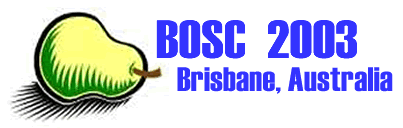

|  |
BOSC 2003 Program
|
|
| Day 1 (June 27, 2003) | ||
|---|---|---|
| Time | Title | Speaker |
| 8:00 - 9:00 | Registration | |
| 9:00 - 9:20 | Welcome | |
| 9:20 - 9:50 | BioJava Turns 1.3 | Mark Schreiber |
| 9:50 - 10:20 | BioRuby project and the KEGG API | KATAYAMA Toshiaki |
| 10:20 - 10:40 | Break | |
| 10:40 - 11:10 | BioPerl in 2003: a users perspective | Neil Saunders |
| 11:10 - 11:40 | Persistent Bioperl | Hilmar Lapp |
| 11:40 - 12:10 | Using Biopython for Laboratory Analysis Pipelines | Brad Chapman |
| 12:10 - 13:30 | Lunch | |
| 13:30 - 14:00 | MoLabIS | Eildert Groeneveld |
| 14:00 - 14:15 | An Open Source Small Laboratory Information System (SLIMS) | Anton Bergheim |
| 14:15 - 14:45 | FlyMine | Andrew Varley |
| 14:45 - 15:15 | Python and the Systems Biology extension module | Michiel de Hoon |
| 15:15 - 15:35 | Break | |
| 15:35 - end | BoFs and other informal meetings | |